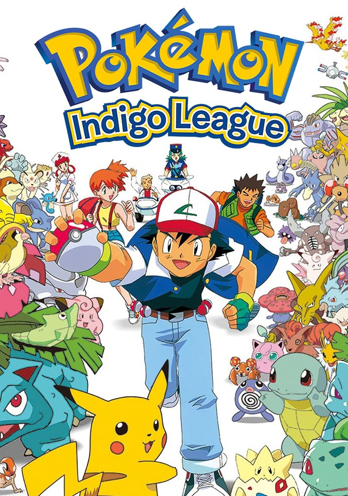
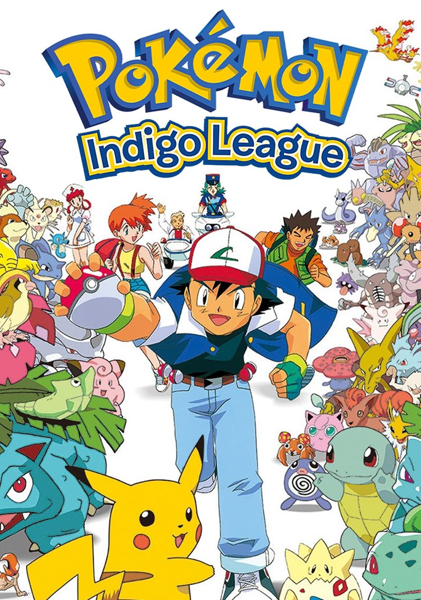
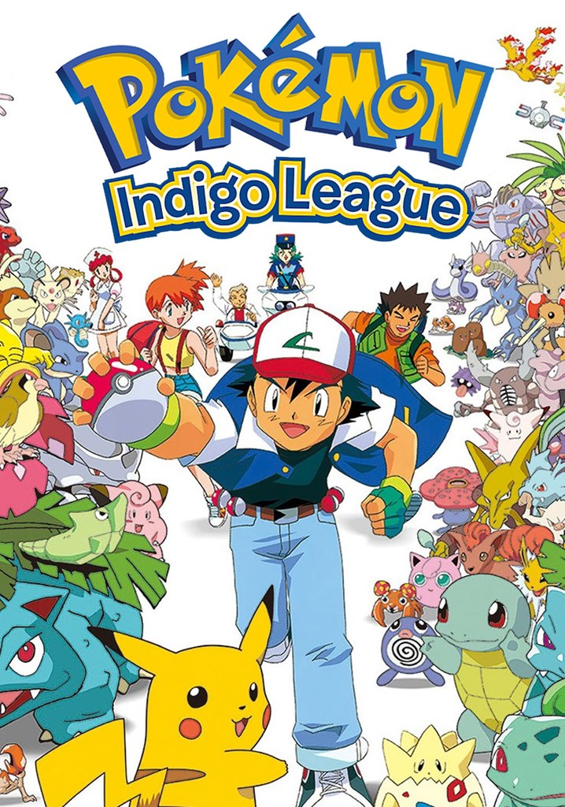
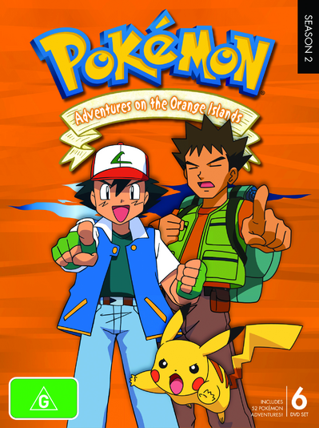
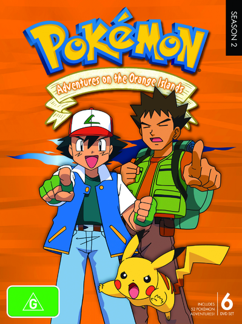
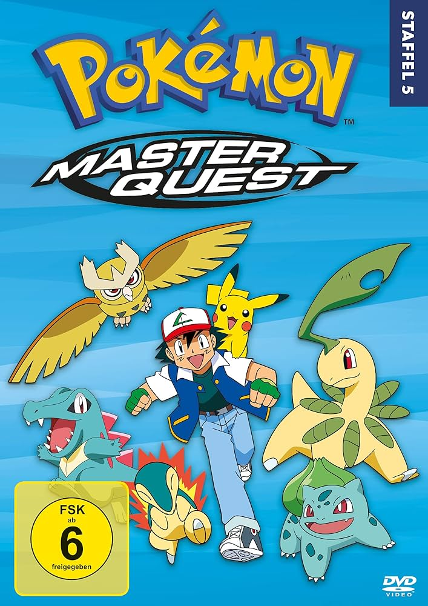
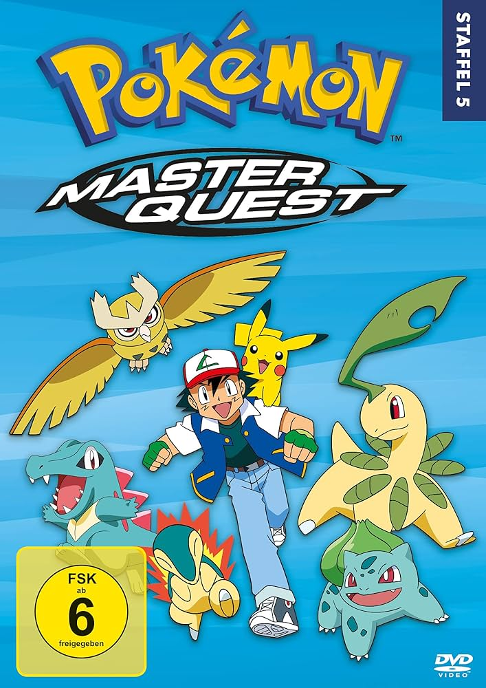

Pokemon the Series started of as an adaptation of the first generations of the Pokemon games. It first aired on TV Tokyo (japanese tv station) in April 1997. There are current 27 seasons of the anime and it is still ongoing. The Pokemon games and the Pokemon anime has a symbiotic relationship by encouriging people who watch the tv sries to play the games and vice versa. The main charackter is a 10 year old kid called Ash Ketchum and his partner Pokemon Pikachu on a journey to become the "Pokemon champion".
The first episode "Pokémon, I Choose You" is where the main charackter Ash Ketchum is introduced.
It beginns simalarly to the first generation games with a few differences those being: all the starter Pokemons are taken so he gets a Pikachu, the rival is called "Gary Oak" and Pikachu refuses to enter his Pokeball.
Plot summary:
In the Pokémon world, 10-year-olds can become trainers. Ash Ketchum oversleeps on the day he’s supposed to receive his first Pokémon, arriving late to Professor Oak's lab, where his rival, Gary, mocks him. With all starter Pokémon gone, Oak gives Ash a Pikachu, who is uncooperative and refuses to stay in its Poké Ball.
While trying to catch a Pidgey, Ash accidentally angers a Spearow, leading to an attack by a whole flock. Pikachu defends Ash with a powerful Thunder attack, earning its trust. Injured but bonded, Ash carries Pikachu to Viridian City, spotting a mysterious golden bird along the way.

Pokémon: Indigo League (originally aired simply as Pokémon) is the first and longest season with 82 episodes of the Pokémon animated television series.
This season takes in the Kanto region place and contains the Pokemon of the first generation.
It originally aired in Japan on TV Tokyo from April 1, 1997, to January 21, 1999. It later aired in the United States in first-run syndication from September 8 to November 20, 1998, and on Kids' WB/The WB from February 13 to November 27, 1999, concluding with the airing of the previously unreleased episode 18 on June 24, 2000.
Ash is driven by his desire to win the Indigo Plateau's Pokémon League, a challenging tournament for outstanding Pokémon trainers who compete against each other in Pokémon battles.
To qualify for the tournament, Ash must collect the required number of gym badges, which are tokens earned after defeating each of the Kanto region's elite Pokémon gym leaders.
Early in the season, Ash befriends the water-type Pokémon trainer Misty (The leader of the Cerulean City Gym in the first generation games), who initially travels with Ash in hopes of him replacing her destroyed bicycle, and Brock, a Pokémon breeder who is the leader of the Pewter City gym.
The trio often encounters Team Rocket, a mischievous duo—Jessie and James, accompanied by their talking Meowth—whose schemes to steal rare Pokémon, especially Ash's Pikachu, bring constant trouble. Despite their antics, they provide comic relief and recurring challenges for Ash and his friends as they journey through the Kanto region.
After the major succsess of the Pokemon anime, a special edition of the first generation released called "Pokemon Yellow" where just like in the series, the starter Pokemon is a Pikachu.
 

Pokémon: Adventures in the Orange Islands is the second season of the Pokémon animated television series, following Ash Ketchum's journey after his adventures in the Kanto region. This season originally aired in Japan on TV Tokyo from January 28 to October 7, 1999, and later in the United States on Kids' WB/The WB from December 4, 1999, to October 14, 2000. Set in the Orange Archipelago, a tropical island chain, the season introduces new challenges and Pokémon not seen in the Kanto region.
After his defeat at the Indigo Plateau, Ash sets out on a new quest to retrieve the mysterious GS Ball and deliver it to Professor Ivy. Along the way, Ash and his friends—Misty and Brock—encounter unique challenges in the Orange Islands. Brock eventually leaves the group to stay with Professor Ivy, and Ash and Misty are joined by Tracey Sketchit, a Pokémon watcher aspiring to meet Professor Oak.
In the Orange Archipelago, Ash competes in the Orange League, a series of unconventional gym challenges that test both skill and creativity rather than traditional battles. The season culminates in Ash facing the Orange Crew's champion, Drake, in a full six-on-six Pokémon battle to claim the championship.
Meanwhile, Team Rocket continues their relentless pursuit of Ash’s Pikachu, devising elaborate schemes to capture it. Their comic misadventures remain a persistent source of trouble and humor throughout the season. The journey through the Orange Islands serves as an opportunity for Ash to grow as a trainer and strengthen his bond with Pikachu and his other Pokémon.
Pokémon: The Johto Journeys is the third season of the Pokémon animated television series, following Ash Ketchum and his friends as they explore the Johto region. This season originally aired in Japan on TV Tokyo from October 14, 1999, to July 27, 2000, and later in the United States on Kids' WB/The WB from October 14, 2000, to August 11, 2001. The season marks the beginning of Ash’s journey through the Johto region, which introduces a new roster of Pokémon from the second generation.
After his adventures in the Orange Islands, Ash sets his sights on the Johto League, a prestigious tournament requiring trainers to collect gym badges from the region’s unique gym leaders. Accompanied by Misty and Brock, Ash takes on new challenges, meets new Pokémon, and strengthens his skills as a trainer. Along the way, the trio encounters friendly rivals, new friends, and a host of wild Pokémon native to Johto.
Team Rocket—Jessie, James, and Meowth—continues their relentless pursuit of Ash’s Pikachu, devising their trademark comical and often disastrous schemes. Their interference adds both humor and obstacles to Ash’s quest.
The Johto region brings a sense of discovery and growth as Ash bonds with his Pokémon, catches new ones, and works toward his dream of becoming a Pokémon Master. The season emphasizes themes of friendship, perseverance, and the excitement of exploring uncharted territory in the Pokémon world.
Pokémon: Johto League Champions is the fourth season of the Pokémon animated television series, continuing Ash Ketchum’s journey through the Johto region. This season originally aired in Japan on TV Tokyo from August 3, 2000, to August 2, 2001, and later in the United States on Kids' WB/The WB from August 18, 2001, to September 7, 2002. Building on the foundation of the previous season, this installment follows Ash as he strives to collect all eight Johto gym badges needed to qualify for the Johto League competition.
Joined by his loyal friends Misty and Brock, Ash continues to encounter new Pokémon from the second generation, face formidable gym leaders, and develop his skills as a trainer. The season is filled with exciting battles, heartfelt moments, and the deepening bond between Ash and his Pokémon.
As always, Team Rocket—Jessie, James, and Meowth—persist in their comical attempts to steal Ash’s Pikachu, devising increasingly elaborate and often disastrous schemes. Their antics provide a mix of humor and challenges that punctuate the trio’s journey.
Throughout the season, Ash and his friends explore the rich culture and landscapes of Johto, making new friends and rivals along the way. Johto League Champions captures the spirit of adventure, growth, and camaraderie as Ash continues to chase his dream of becoming a Pokémon Master.
 

Pokémon: Master Quest is the fifth season of the Pokémon animated television series, concluding Ash Ketchum's journey through the Johto region. This season originally aired in Japan on TV Tokyo from August 9, 2001, to November 14, 2002, and later in the United States on Kids' WB/The WB from September 14, 2002, to October 25, 2003. As Ash’s adventure in Johto reaches its peak, he faces his final gym battles and prepares for the ultimate challenge: the Johto League Silver Conference.
Ash, accompanied by his friends Misty and Brock, travels through Johto, capturing new Pokémon, battling powerful gym leaders, and encountering legendary Pokémon. With all eight Johto gym badges in hand, Ash enters the Silver Conference, where he competes against strong rivals, including his long-time nemesis, Gary Oak. These high-stakes battles test Ash’s growth as a trainer and push him closer to achieving his dream.
Meanwhile, Team Rocket—Jessie, James, and Meowth—continue their comical yet persistent schemes to capture Pikachu and other rare Pokémon, providing a mix of humor and obstacles for Ash and his friends.
Pokémon: Master Quest highlights themes of perseverance, friendship, and the thrill of competition, while showcasing the culmination of Ash's Johto journey. As he bids farewell to old friends and prepares for new adventures, this season marks a turning point in his quest to become a Pokémon Master.